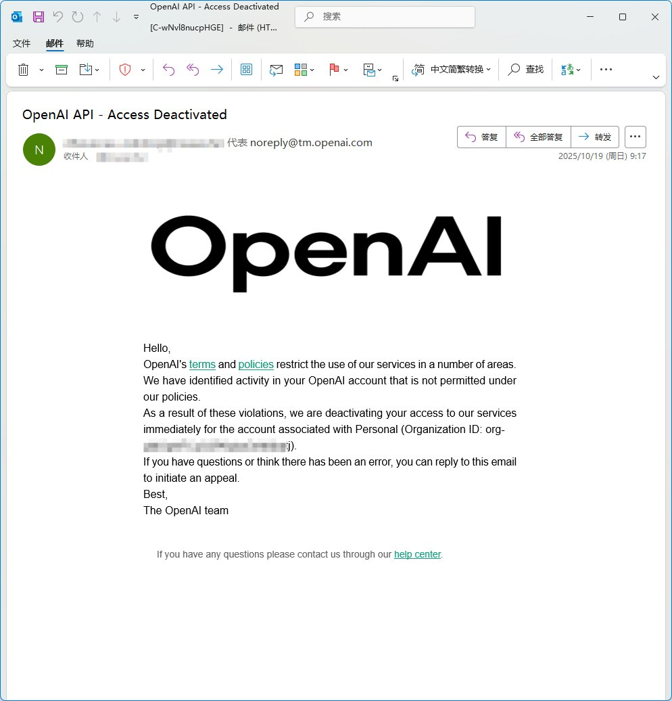
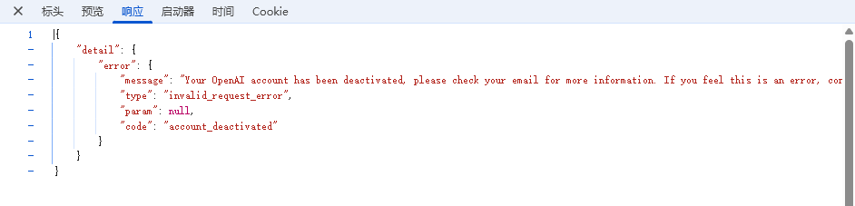

たたなこ🏳️⚧️🍥
@tatanakots
@named_Das @YinsenHo_ 用了一晚上codex，起床后……


たたなこ🏳️⚧️🍥
@tatanakots
一早起来我们亲爱的封闭人工智能就发来喜讯
我号没了！
我12美金余额呢？！我昨晚上才Vibe掉了0.12美金啊喂！ https://t.co/HTbOD5eXF1
程序员劝退师
@named_Das
@YinsenHo_ 是时候上 codex 了 强无敌